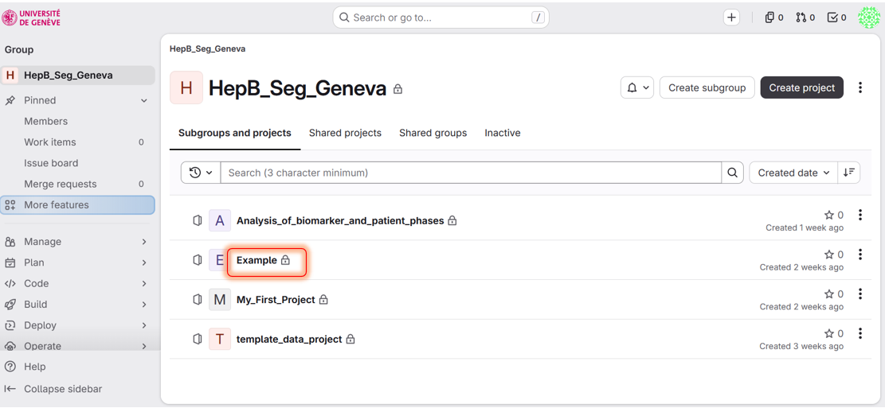
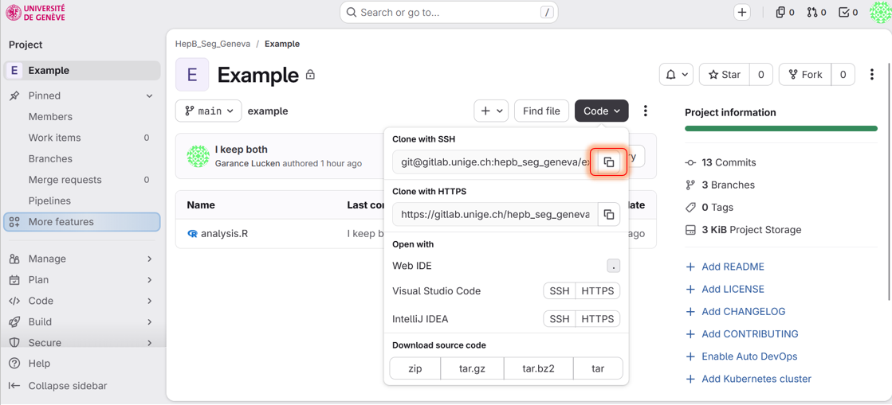

Create a branch, commit your work, and merge it back into main
Please complete the Installation guide and the First clone guide before continuing.
Sometimes Git asks you to write a message (for example during a merge). By default it opens vim, a terminal editor that is not beginner friendly. Let's replace it once and for all with an editor you already know.
If you use VS Code (recommended):
$ git config --global core.editor "code --wait"
If you prefer a simple alternative:
$ git config --global core.editor "notepad"
$ git config --global core.editor "nano"
$ git config --global core.editor "nano"
Check that your editor was saved correctly:
$ git config --global core.editor
Esc, then type :q! and press Enter to quit without saving.


$ git clone PASTE_THE_SSH_URL_HERE
Enter the project directory:
$ cd Example
Before starting work, download the latest changes from GitLab:
$ git pull origin main
Create a new branch and switch to it. Branch names start with a prefix like feat/ followed by a short description of the work. Replace your-login with your own login so your branch name stays unique in the shared project:
$ git switch -c feat/new_analysis_your-login
Check that you are on your new branch (the current branch is marked with a *):
$ git branch
main. Everything you commit on feat/new_analysis_your-login stays separate from main until you decide to merge it.
Create a new R script named analysis_your-login.r (replace your-login with your own login, like in the previous chapter) and type print("Hello, World!") inside it.
Stage the file and create a commit:
$ git add analysis_your-login.r
$ git commit -m "Add analysis_your-login script that prints hello world"
Send your new branch and its commit to GitLab:
$ git push -u origin feat/new_analysis_your-login
-u option links your local branch to the one on GitLab, so next time you can simply run git push.
Open the project on GitLab: your branch feat/new_analysis_your-login now appears in the branch list.
Your work is ready, so let's bring it back into main. First switch back to main and download its latest version:
$ git switch main
$ git pull origin main
Now merge your branch into main:
$ git merge feat/new_analysis_your-login
Since nobody else touched these files, Git merges everything automatically (a fast-forward). Send the updated main to GitLab:
$ git push origin main
$ git branch -d feat/new_analysis_your-login
A merge conflict happens when two branches change the same lines of the same file, Git cannot guess which version to keep, so it asks you to decide. That sounds scary, but it is just Git being careful. Let's trigger one on purpose to practice.
Make sure you are on main and up to date, then create a new branch:
$ git pull origin main
$ git switch -c feat/conflict_your-login
Open analysis_your-login.r in RStudio or VS Code and change the greeting to:
print("Hello my World!")
Stage, commit and push this change on your branch:
$ git add analysis_your-login.r
$ git commit -m "Change greeting to hello my world"
$ git push -u origin feat/conflict_your-login
Now play the role of a teammate: switch back to main and edit the same line of the same file:
$ git switch main
Open analysis_your-login.r again and change the greeting differently:
print("Hello this World!")
Commit and push this change on main:
$ git add analysis_your-login.r
$ git commit -m "Change greeting to hello this world"
$ git push origin main
The trap is set: main and your branch now disagree on the same line.
Try to merge your branch into main:
$ git merge feat/conflict_your-login
This time Git refuses to merge automatically and reports a conflict:
CONFLICT (content): Merge conflict in analysis_your-login.r Automatic merge failed; fix conflicts and then commit the result.
Don't panic, your work is not lost. Git has paused the merge and waits for you to decide. Check which files are in conflict:
$ git status
Open analysis_your-login.r. Git has marked the conflicting lines like this:
<<<<<<< HEAD
print("Hello this World!")
=======
print("Hello my World!")
>>>>>>> feat/conflict_your-login
<<<<<<< HEAD and =======: the version on main.======= and >>>>>>>: the version from your branch.Edit the file: keep the version you want (or combine both), and remove all the marker lines (<<<<<<<, =======, >>>>>>>). For example, keep your branch's greeting:
print("Hello my World!")
Once the file is fixed, finish the merge by staging and committing it:
$ git add analysis_your-login.r
$ git commit -m "Resolve merge conflict: keep hello my world"
$ git push origin main
You can always cancel the merge and go back to the state before it with git merge --abort.
main directly from the web interface. If there is a conflict, GitLab even provides an online merge editor to resolve it, handy for small conflicts. For bigger ones, the local workflow you just practiced stays the way to go.
$ git branch -d feat/conflict_your-login